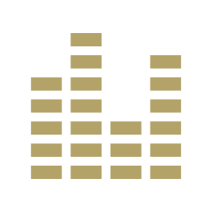

Network Graph
Browse the collaboration network as an interactive graph, filter by market, and inspect the highest-value artist pairings.

Interactive Class Project
Redirecting to the main network visualization. If it does not open automatically, use the links below.
Browse the collaboration network as an interactive graph, filter by market, and inspect the highest-value artist pairings.
Use the static choropleth dashboard to switch artists, compare country-level revenue, and review top reconstructed collaboration opportunities.